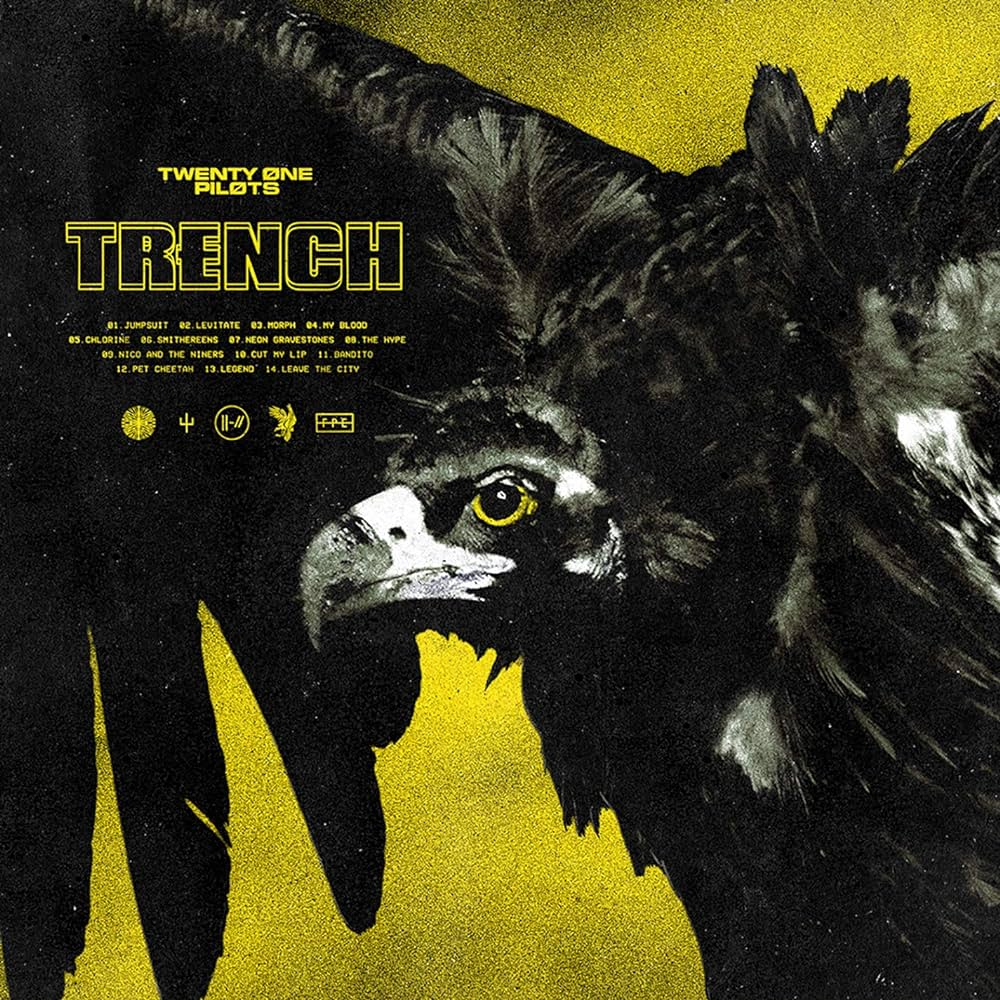
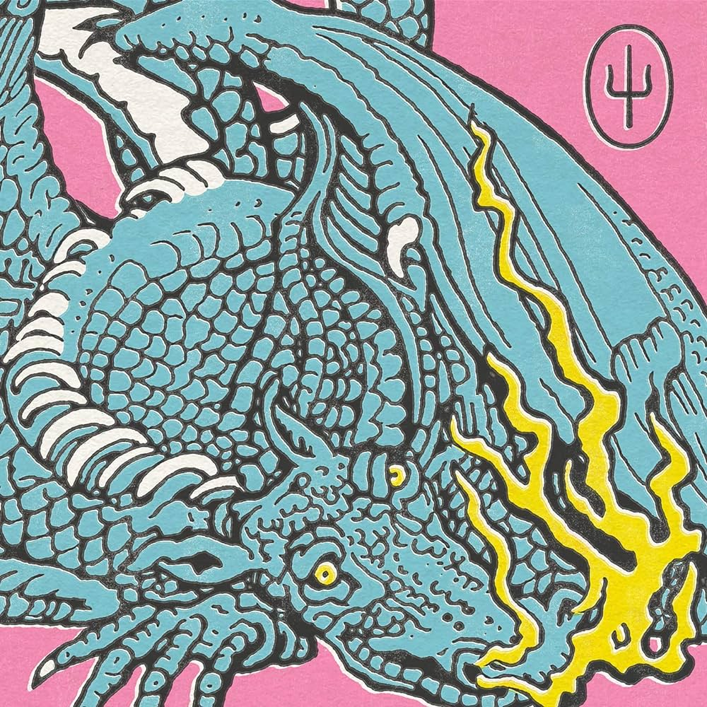
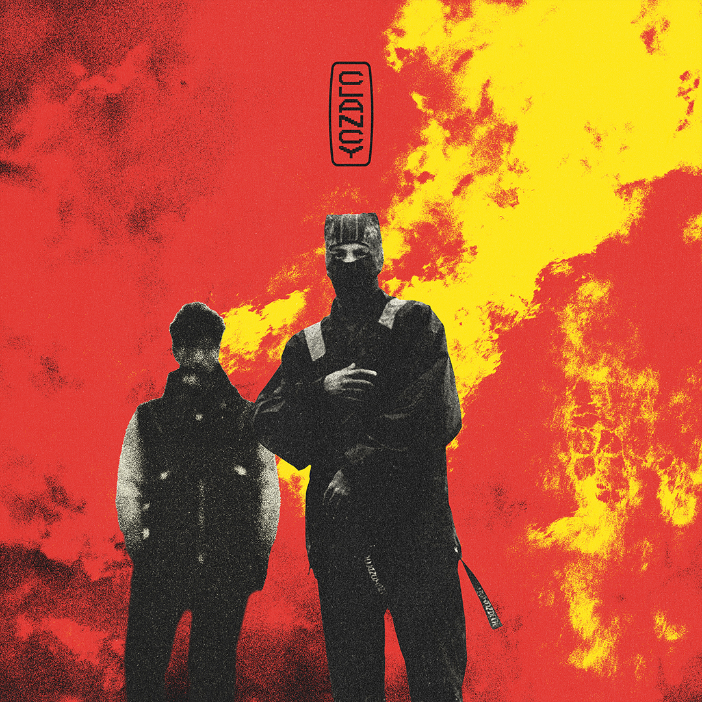

Twenty one pilots
2009, 14 canciones, 1h 2min

Es el primer disco de del vocalista, porque esta con su primer banda, pero fue tomada como su primer album por tener canciones tan buenas e intimas del vocalista
2009, 14 canciones, 1h 2min
Es el primer disco de del vocalista, porque esta con su primer banda, pero fue tomada como su primer album por tener canciones tan buenas e intimas del vocalista
2013, 12 canciones, 48min

Fue el primer disco con los actuales artistas, los cuales son el vocalista Tyler, y el baterista Josh, mantiene sus canciones personales las cuales siguen haciendo enfasis en enfermedades mentales, y las personas que aparecen en la portada son sus abuelos
2015, 14 canciones, 52min

Fue el album con las canciones mas virales al momento, y se nos empezo a introducir las canciones con historias} de un personaje ficcticio el cual se sigue contando su historia con el pasar de los albumnes, sigue con canciones personales, las cuales hablan sobre la salud mental
2018, 14 canciones, 56min
Personalmente de mis albumes favoritos, en el cual continuan con la historia del personaje ficticio, pero lo introducen a un mundo mas amplio, el cual la historia se desarrolla de mayor forma, sigue tratando canciones que hablan de la salud mental pero tambien empieza con canciones de amor
2021, 11 canciones, 38min
Fue el album peor recibido por la comunidad porque cambia el tipo de musica que presentan, se le sigue dando la continuidad a la historia del personaje ficticio, dejan el enfoque de enfermedades mentales, por lo que no fue muy bien recibida
2024, 13 canciones
Es el album que esta por estrenarse, por lo que aun estamos en espera de conocer el rumbo de la historia y el enfoque del album